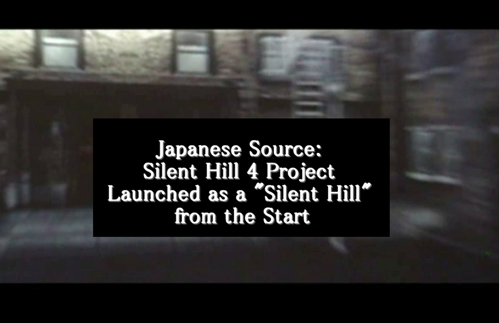
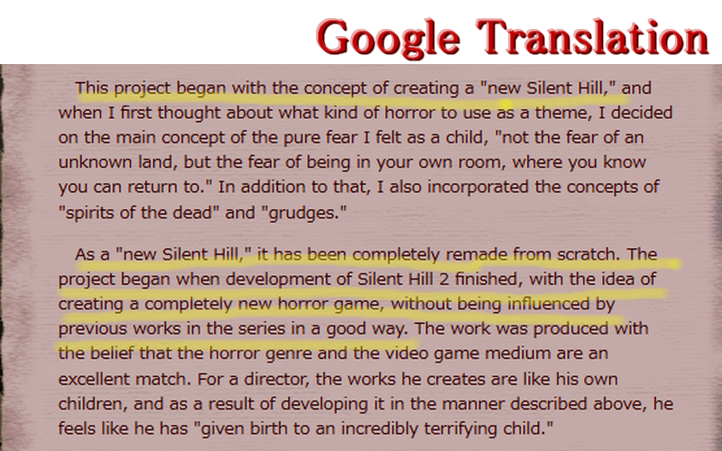
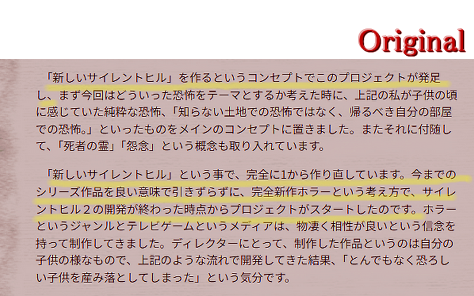
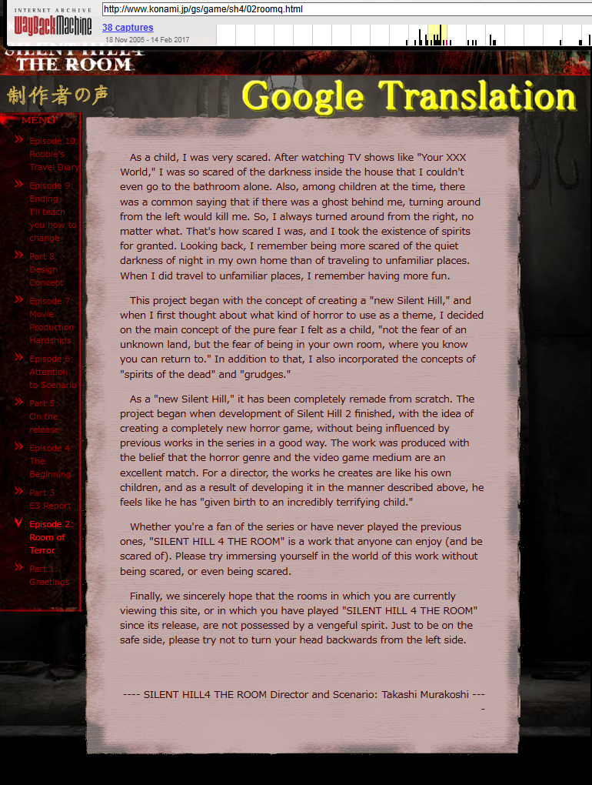
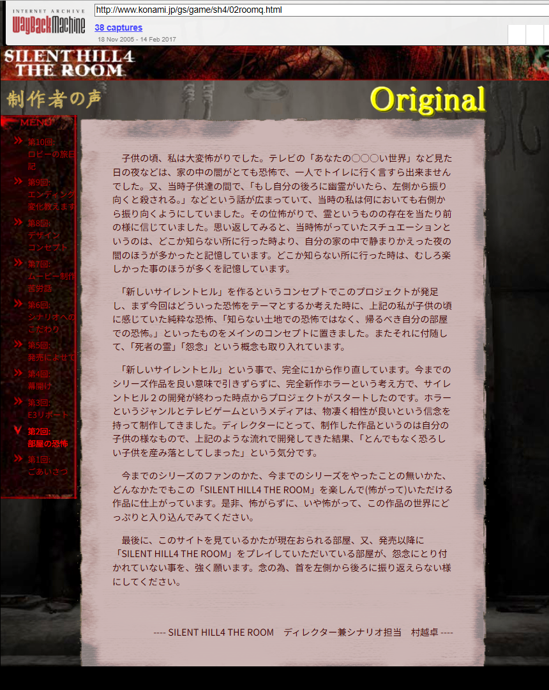

SH4 Launched as a Silent Hill from the Start

Japanese Source: Silent Hill 4 Project Launched as a "Silent Hill" from the Start The spin-off theory isn't true.
This is a mirror of the DeviantArt version linked above, provided as a backup and for easier access.

I often see people overseas say this:
"Silent Hill 4 was originally made as a different project called Room 302."
But that theory never really existed in Japan. That's because the director, Murakoshi-san, already talked about how it was developed on the official site.
According to him, after SH2 was released, Team Silent split into SH3 and SH4, and Murakoshi-san's group made SH4 from scratch. This lines up with what other team members have said too.
If you want more details, it's worth translating and reading his original page.
And this is Team Silent's official explanation, written in their native language.


🌐制作者の声「第2回:部屋の恐怖」SILENT HILL4 THE ROOM ディレクター兼シナリオ担当 村越卓
From Konami SILENT HILL 4 THE ROOM, Developer's Voice" Vol. 2: "The Terror of the Room" Director and Scenario: Suguru Murakoshi
https://web.archive.org/web/20071207104611/http://www.konami.jp/gs/game/sh4/02roomq.html
You can read the full text if you translate the page above on the Wayback Machine. It's all properly written there.
✅ Murakoshi-san's Comment (Original Japanese Source, Translated English)
JPN:「新しいサイレントヒル」を作るというコンセプトでこのプロジェクトが発足し...、
EN: This project began with the concept of creating a "new Silent Hill"...
JPN: 「新しいサイレントヒル」という事で、完全に1から作り直しています。今までのシリーズ作品を良い意味で引きずらずに、完全新作ホラーという考え方で、サイレントヒル２の開発が終わった時点からプロジェクトがスタートしたのです。
EN: As a "new Silent Hill," it was completely remade from scratch. The project started right after the development of Silent Hill 2 finished, with the idea of creating a completely new horror game, without being constrained by previous works in the series in a positive way.


By the way, the part censored as "あなたの○○○い世界" in the original Japanese site actually refers to "Anata no Shiranai Sekai", which I'm revealing here—a ghost special program that used to air a lot during summer vacations in Japan. The reenactment dramas were genuinely scary. In Japan, the "ghost season" is summer rather than Halloween.